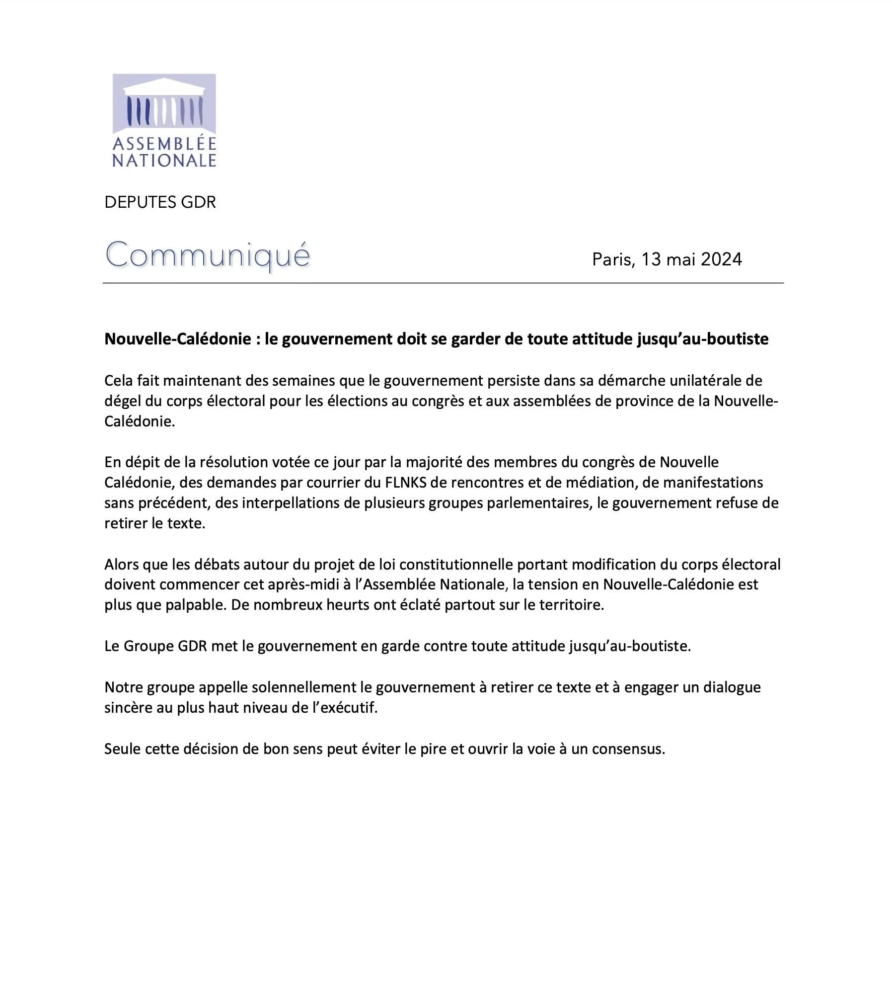

Publication relayée par le PCF 79
Le groupe GDR demande le retrait du texte sur le corps électoral en Nouvelle-Calédonie
Date de mise à jour indiquée par Facebook · 14 mai 2024
Texte de la publication · Groupe GDR à l’Assemblée nationale
Dégel du corps électoral en Nouvelle-Calédonie, seul un retrait du texte peut éviter le pire et ouvrir la voie à un consensus. Notre communiqué

Sources
Groupe GDR à l’Assemblée nationale · publication relayée par le PCF 79 · bibliothèque Facebook · AR-0002-FB-01392
À lire aussi · Jean-Victor Castor interpelle le gouvernement sur la Nouvelle-Calédonie